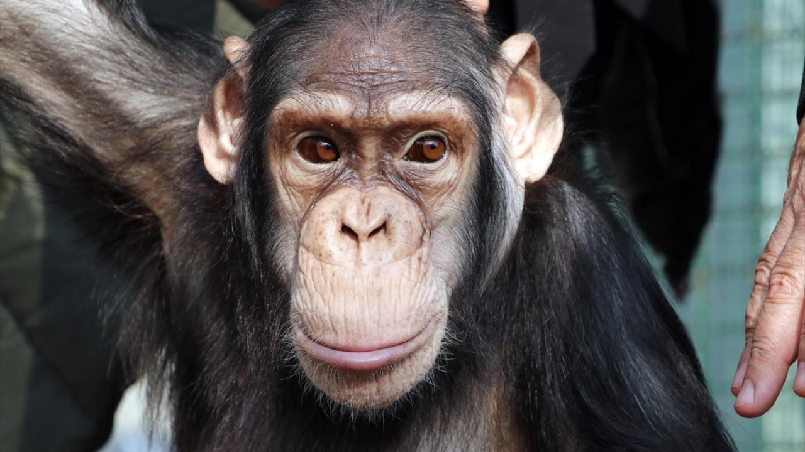

Şempanzeler (Pan troglodytes), Afrika’nın tropikal ormanlarında ve savanlarında yaşayan, insanla genetik olarak %95–98 oranında benzerlik gösteren, yüksek zekâları ve sosyal yapılarıyla dikkat çeken primatlardır; ortalama 40–50 yıl yaşayabilen bu tür, meyve, yaprak, böcek ve küçük hayvanlarla beslenir, taş ve dal gibi araçları kullanarak yiyecek elde edebilir, sesler, jestler ve yüz ifadeleriyle iletişim kurar, karmaşık hiyerarşilere sahip topluluklar halinde yaşar. Ancak habitat kaybı, kaçak avcılık ve hastalıklar nedeniyle Uluslararası Doğa Koruma Birliği (IUCN) tarafından “tehlike altında” olarak sınıflandırılmıştır ve bu nedenle korunmaları hem ekolojik denge hem de insanın evrimsel geçmişini anlamak açısından büyük önem taşır; onların davranışlarını incelemek, insanın sosyal ve kültürel gelişim süreçlerine ışık tutarken aynı zamanda doğa ile olan bağımızı yeniden düşünmemizi sağlar.